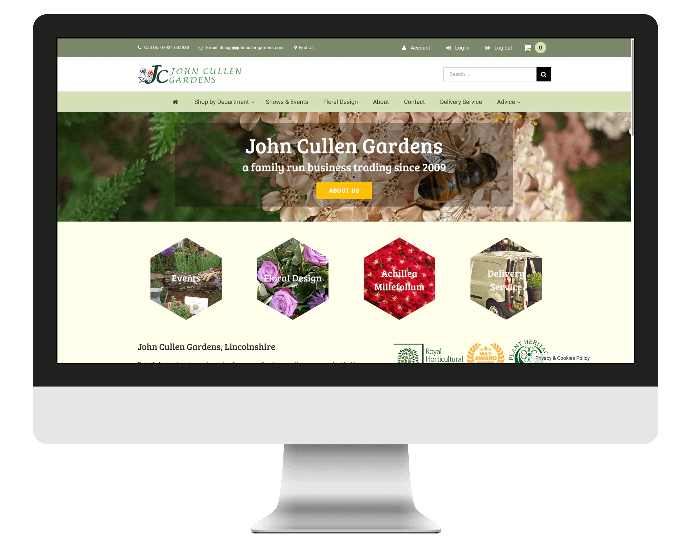

John Cullen Gardens is a multiple award-winning company based in Lincolnshire which specialises in growing plants for the pollinators, plants for scent and plants for taste. Initially, John Cullen had a simple brochure website built using a WYSIWYG Web Builder, but in October 2017 they reached out the Easitill Web Team for a website redesign.
Visit Website
